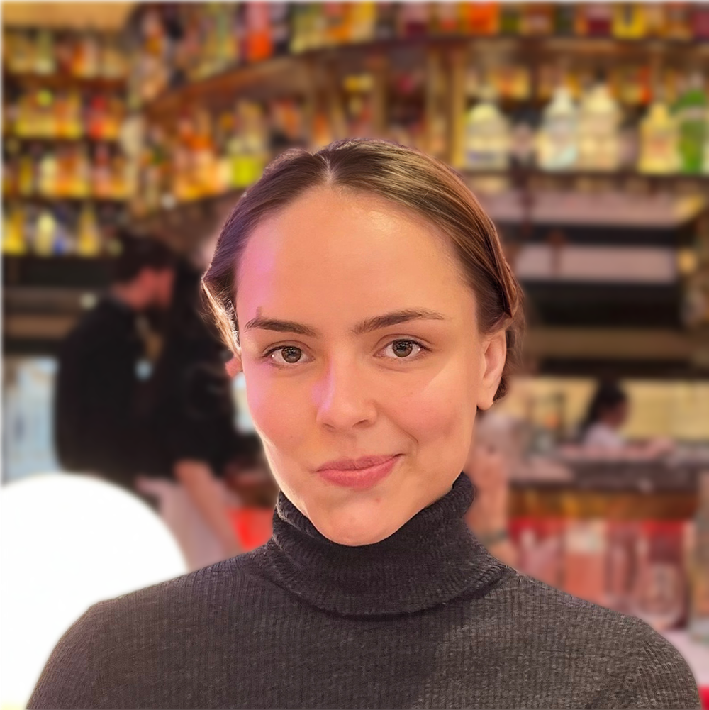

News
-
 Data Curation & Augmentation in Medical Imaging; ECCV Workshop 2026
Data Curation & Augmentation in Medical Imaging; ECCV Workshop 2026 -
 iMED Challenge; MICCAI Workshop 2026
iMED Challenge; MICCAI Workshop 2026
PhD candidate, UCL Centre for Artificial Intelligence. Computer Vision Scientist, SPAICE.
View CV